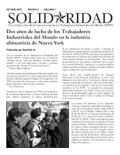

Submitted on Mon, 12/03/2007 - 1:22pm
 The 2008 "Solidarity Forever" labor history calendar published by the Industrial Workers of the World since 1985 is available.
The 2008 "Solidarity Forever" labor history calendar published by the Industrial Workers of the World since 1985 is available.
Images span the period from the 1886 Haymarket Demonstration, where workers protesting police brutality against striking workers were attacked by police, to an August 2007 march in North Providence, Rhode Island, in solidarity with IWW-organized foodstuffs workers, which ended with another brutal police attack which sent one Wobbly to the hospital with a severed artery. Other images include a 1920s strike by black and white Alabama coal miners, child labor from India, a Southern California strike by immigrant framers forced to take buses to the picket lines after immigration authorities started attacking their strike caravans, a sit-down strike by Philadelphia streetcar workers, a massive Stockholm (Sweden) rally in solidarity with Sacco and Vanzetti, Detroit teachers picketing against demands for deep concessions, the Paterson strike, immigrant rights protests and more. Hundreds of dates commemorate events in world labor history.
Submitted on Tue, 11/27/2007 - 10:02pm
 Headlines:
Headlines:
- Australia: Individual contracts undercut equal pay
- NYC campaigns winning, but facing stiff resistance
- Burma protests: Is India looking the other way?
Featured Articles:
- Armed men break strikes in Philippines
- Rebuilding the IWW at Streetlight Shelter
- Reviews: Ben Fletcher, Atom Spies, Horizontalism, IWW history books in 2007
Download a free PDF copy of this issue.
Submitted on Mon, 11/19/2007 - 1:57pm
Friends:
As Starbucks Chairman Howard Schultz wages a crude union-busting operation against baristas striving for a living wage and secure work hours, he is applying to buy a $25-$30 million co-op apartment in Manhattan!
Tell the building's Co-op Board that New York is a union town and Howard Schultz is not welcome here!
Click here to participate in the e-mail action: http://starbucksunion.org/node/1903
Thank you for all of your hard work.
-The IWW Starbucks Workers Union, http://StarbucksUnion.org
Submitted on Tue, 11/13/2007 - 3:02pm
Disclaimer - The opinions of the author do not necessarily match those of the IWW. The image pictured to the right did not appear in the original article, we have added it here to provide a visual perspective. This article is reposted in accordance to Fair Use guidelines.

Claims of “union busting” are a drag on down Starbucks’s good name
Starbucks finds itself in an unenviable position: being compared to Wal-Mart in its treatment of workers. How does a perennial leader on corporate social responsibility respond? Starbucks seems to be at a loss for an effective answer to accusations it is a “union buster”.
The coffee house giant is having either an unfortunate or telling run of labour rights confrontations with worker unions, particularly Industrial Workers of the World. Starbucks recently reached a non-monetary settlement agreement with the National Labor Relations Board over unionising efforts at a store in Grand Rapids, Michigan, at which the IWW says management “coercively interrogated” employees about union activities.
Starbucks has settled claims of “union busting” twice before in the past two years. At the time of writing, it is defending itself against 32 counts of unlawfully stifling organising activity at hearings being conducted by an administrative law judge in New York.
IWW says the coffee giant not only squelches union activity, but also misrepresents the generosity of the benefits it offers to workers. The union says only 42% of Starbucks’ workers are covered by its health insurance, putting the company in worse straits than even Wal-Mart, which insures 47% of its workforce.
Submitted on Tue, 10/23/2007 - 3:38pm
Con:
- Dos años de lucha de la IWW en la industria alimenticia de Nueva York
- Miembros de la IWW usan acción directa para ganar sus demandas y restablecer condiciones laborales en la recoleccion del reciclaje de Berkeley, California
- Por una alianza de trabajadores textiles de Bangla Desh, América Latina y del norte. IWW se reúne con la Federación Nacional de Trabajadores Textiles (NGWF) de Bangladesh
PDF File